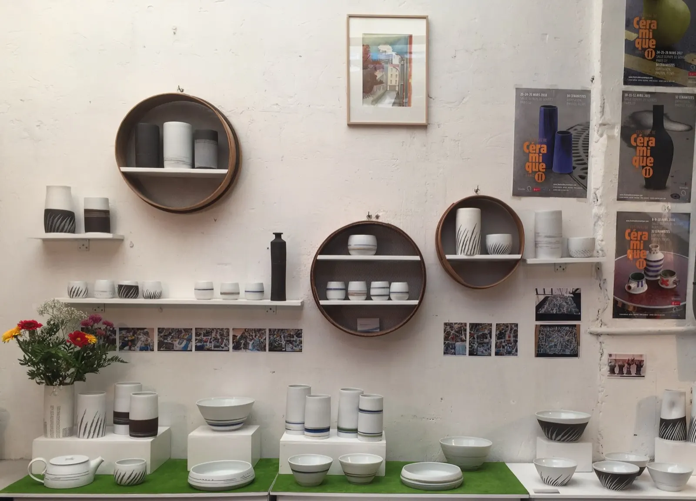

Grès noirs et porcelaines exposésGrès noirs
Grès noir engobé de porcelaine blanche, lignes gravées.
- Plat diamètre 26 cm, hauteur 8 cm
- Coupe diamètre 24 cm, hauteur 8 cm
- Saladier diamètre 24 cm, hauteur 11 cm
- Deux boîtes hauteurs 8 et 14 cm
- Vase hauteur 28 cm